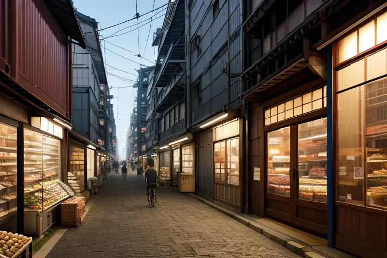

第一章 現実の兵庫
あなたはまだ気づいていない。この土地にも、王がいることを。
神戸港の埠頭は、巨大な船が吐き出すコンテナの山で埋め尽くされていた。クレーンの動きは正確で、人の欲望を形にした金属の塊を、絶え間なく積み上げる。異人館の並ぶ坂道では、観光客の笑い声が石畳に跳ね返る。その奥、路地裏の小さな市場では、神戸ビーフの脂の香りと、灘の酒蔵から漂う麹の甘い匂いが混ざり合う。活気とは、人の流れと金の流れが織りなすざわめきそのものだ。
しかし、そのざわめきの底には、微かな歪みが潜む。交差点で一瞬躊躇する自転車、港で綱が擦れる不協和音、観光客の群れが生む些細な圧力の偏り。それらはすべて、この「商都線」という世界線に刻まれる、目に見えない亀裂の予兆だった。
そのすべてを、埠頭の倉庫の影から一人の男が静かに見つめている。彼の目は、賑わいの交差点と、そこに集まる無数の選択の瞬間を、青と赤に染め分けながら追っていた。
第二章 歪みの兆候
神戸港の埠頭には、世界の船が寄港し、コンテナが積み上げられていた。活気は経済の血液のように流れ、港円の紋章が象徴する繁栄そのものに見えた。しかし、交差王ヒョウゴリア・クロスは、その活気の「流れ」の中に、幾つか不自然な淀みを感知していた。異国から来た船の喫水線の読み、クレーンの旋回速度の0.1秒の遅れ、倉庫労働者の間で交わされる、いつもより短いため息。これらはすべて、巨大な経済と人の流れが生み出す、微細な歪みの兆候だった。
彼の傍らでは、主席妖精クロッサが小さなため息をついた。「選択が増えすぎています。交差点が、飽和しつつあります」
港を管理する地域妖精コウベリアが報告する。「異国波の衝突予測、三地点で上昇。淡路島沖の物流経路に、圧力の偏り」
王は目を閉じた。視界には、無数の青と赤の線が交差する神戸の街が広がる。それぞれが人の意思であり、欲望であり、選択だ。その一つ一つの交差点で、何を選ぶか。その積み重ねが、今、大きな流れの淀みを生み、やがてはこの商都線そのものを損なう亀裂へと繋がりかねない。
彼は感情を持たないはずだった。だが、この街の密度の高い「選択」の奔流に晒されるうちに、ある葛藤が心象を掠めた。最適な調整とは、この活気ある流れを止めることなのか、それとも―。
第三章 王の葛藤
神戸港の埠頭に立つと、巨大なコンテナ船がゆっくりと接岸する。それは富と欲望の塊であり、この商都線の鼓動そのものだ。ヒョウゴリア・クロスは、その船がもたらす経済の流れと、同時に増幅する地盤への負荷を、等価の重さとして感じていた。妖精クロッサは彼の肩で、青と赤の光を交互に点滅させ、相反するデータを示す。
「活気は歪みを生む。歪みは活気を損なう。どちらを取るか、王よ」
彼は問われた。感情を持たない調整者なら、数値的に最適な一点を選ぶ。港の活気を三割抑制し、地盤の歪みを解消する。それが「正解」だ。
しかし、彼の視界には、埠頭で船を待つ労働者の熱気、異人館街を歩く観光客の笑顔、深夜まで煌くビルの灯りが流れ込む。これらは全て、この「歪み」の上に成り立つ生の営みだった。最適解を選ぶとは、これらの熱の一部を消すことに等しい。
彼は剣を握った手をわずかに震わせた。それは設計図にない動作だった。守るべきは地層の均衡か、それとも、その上に蠢く人々の選択が織りなす、不完全で熱いこの景色か。交差王は、初めて自らの内なる交差点に立ち止まった。
第四章 妖精との対話
「王よ、あなたは迷っている」
港の倉庫街の影で、クロッサが低く言った。その声は、荷役機械の唸りと船の汽笛の隙間を縫うように聞こえる。
「この土地の商いは、衝突そのものです。異なる価値観、異なる欲望が港でぶつかり、取引が生まれ、金が流れる。その衝突の熱が、歪みを増幅させる一因でもある」
王は黙って聞く。目の前の埠頭では、巨大なコンテナがクレーンで移される。一つ一つの箱の中に、どれほどの欲望と生活が詰まっているか。
「でもね」と、コウベリアが波の音のように囁いた。「この港が、どれだけの『逃げ場』を生んできたか。鎖国時も、震災の後も、外からの物資と、外へ向かう希望が、ここから出入りした。衝突は破壊だけじゃない。新しい流れの始まりでもある」
交差王は、手の中の交差剣を見つめた。青と赤の光が、ゆっくりと回転していた。一方を選べば、他方を傷つける。妖精たちの言葉は、その両刃を、より鋭く彼の内側に突き立てるだけだった。
「選ぶとは、何かを切り捨てることか」
彼の呟きは、港の喧騒に消えた。
第五章 微調整と余韻
神戸港の埠頭で、巨大なコンテナがクレーンで吊り上げられる。その真下を、時間に遅れそうな作業員が駆け抜けようとした瞬間、彼の靴紐がほどけた。彼はよろめき、ほんの一瞬、足を止める。コンテナは、彼が元々通ろうとしたスペースの、数十センチ横を通り過ぎた。誰も気づかない微かな調整だ。
交差王は、倉庫の影に立っていた。手の中の交差剣は、ほとんど光を失い、ただの二本の針のように見える。彼はもう、大いなる選択を下したのではない。ただ、無数の小さな交差点で、ほんの少し、流れを曲げ続けている。震災の記憶が刻まれたこの土地では、一つの大きな歪みを直す代わりに、千の小さな偶然を調整する。そばめしの屋台で財布を落とす老人の前に、たまたま親切な学生が通りかかる。有馬温泉へ向かう曲がりくねった道で、スピードを出しすぎた車のタイヤの前に、小石が一粒転がる。
彼は感情を学び、葛藤を知った。だからこそ、英雄的な救済ではなく、この地に蓄積された「生」の密度を、少しでも損なわない方法を選んだ。交差点で何を選ぶか。彼は今、全てを選び、全てを微調整する。
港を渡る風が、彼の髪を揺らした。そこには、もはや王らしい気配はない。ただ、どこにでもいそうな、物憂げな青年の影だけが、長く延びていた。
あなたの町にも、王がいる。